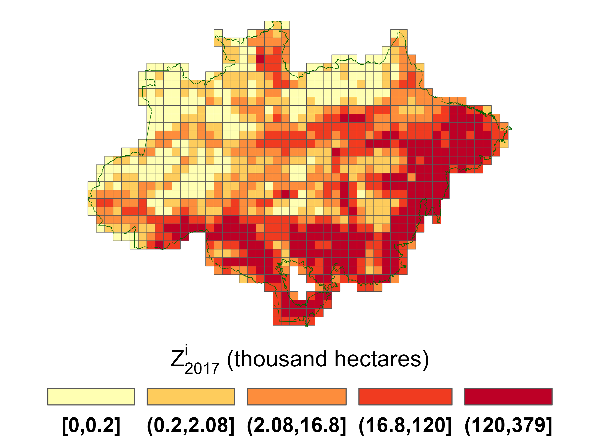
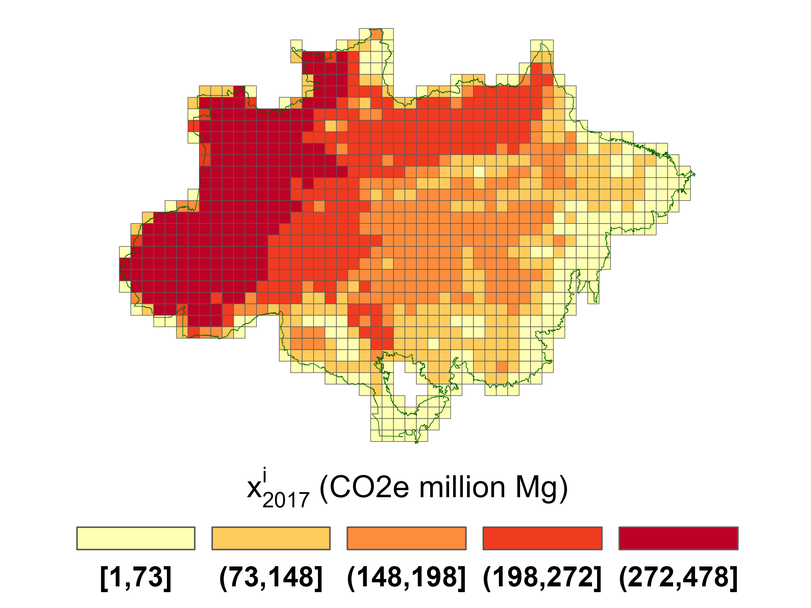
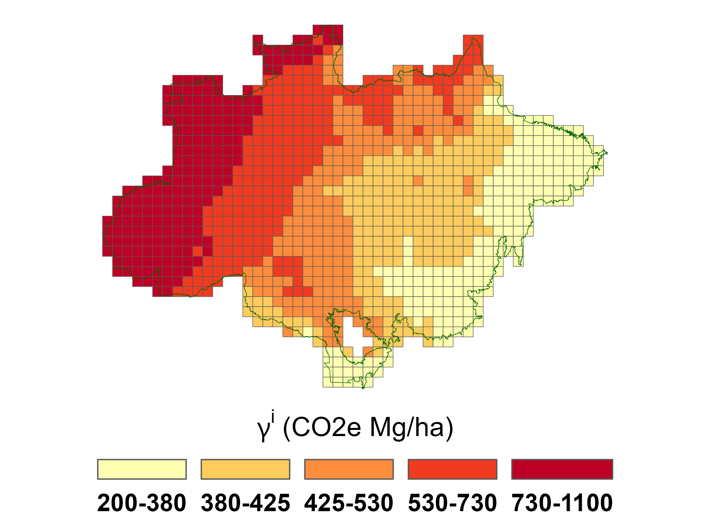
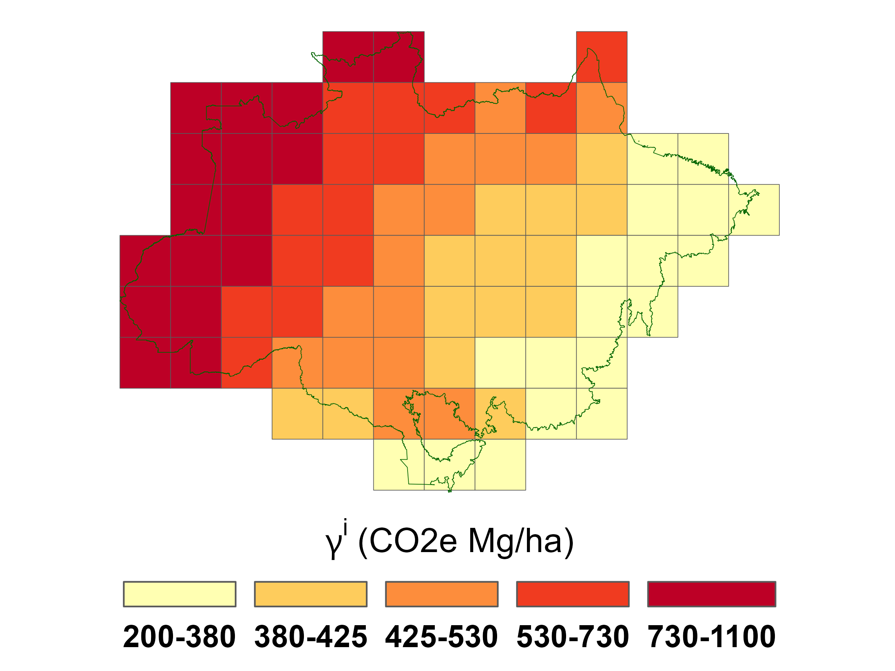
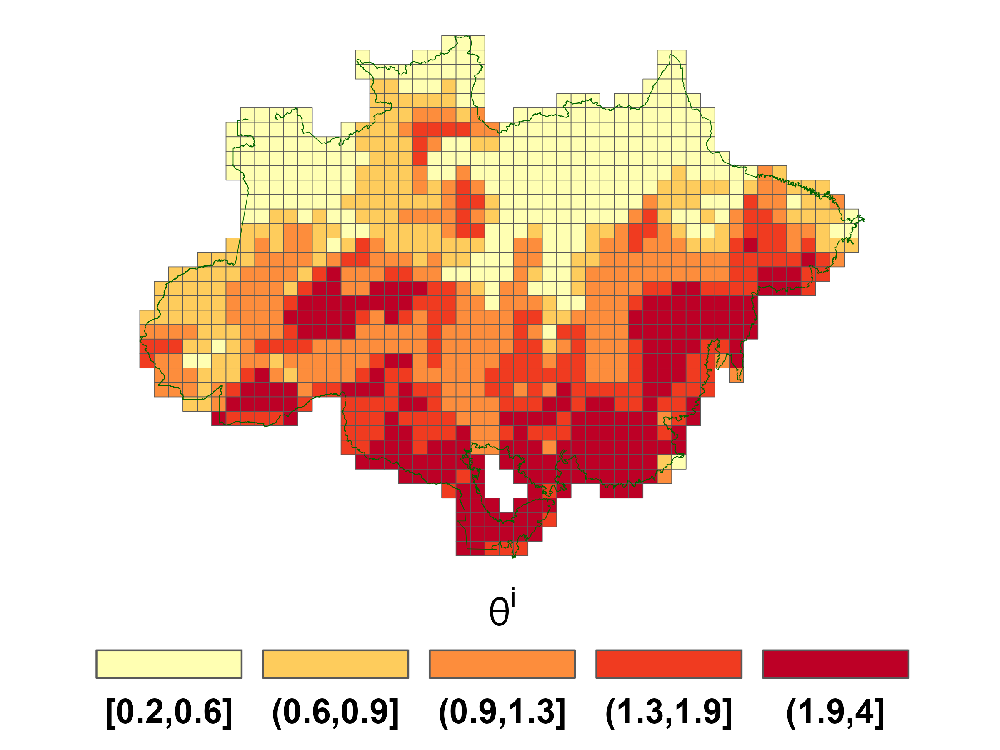
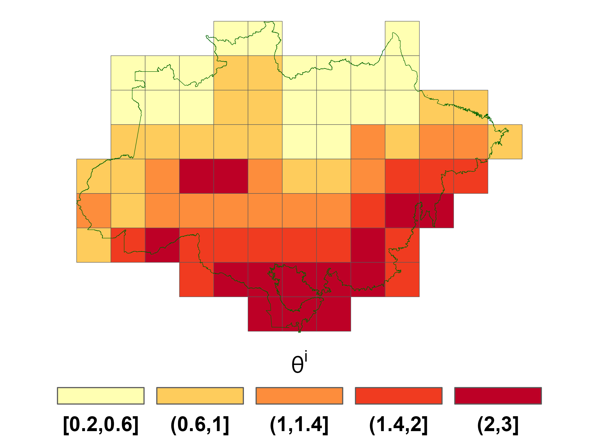

Productivity measurement#
As discussed in section 4, we construct site specific productivity estimates from the output of regression equations. See formula (6). Appendix A describes in detail all data used for these regressions. What follows is a summary of the evidence that we draw on.
For input into the agricultural productivity regression, we use the year of 2017 as a reference for many variables, since this is latest Agricultural Census in Brazil. For the regressand, this census provides information on the value of cattle sold for slaughter per hectare of pasture land at the level of a municipality.[2] As regressors, we use geographical variables as stipulated in Appendix A. The census provides observations on the value of cattle sold for slaughter per hectare of pasture land for 466 municipalities out of the 540 municipalities that intersect the biome. Since we have data on the regressors, and we use regression predictions to attribute values to the remaining municipalities and to obtain agricultural productivities, the \(\theta^i\)’s.
For measuring the productivity of carbon sequestration, the \(\gamma^i\)’s, we first use data from MapBiomas [3] to select pixels of \(100m\times 100m\) that can be considered primary forests. Given this partitioning, we used 2017 data from ESA Biomass[4] to obtain carbon per hectare. We then calculate average productivities for each municipality. Analogous to the procedure we used for the \(\theta_i\)’s, we run a regression using the MapBiomas data as regressands and geographical variables as regressors to obtain estimates at the spatial resolutions used in our model.
We use two different spatial resolutions for the results that we report. In both cases, we project municipal estimates into two grids of the Amazon biome. At the most detailed level we consider a regular grid of the Amazon region with pixels of 30m \(\times\) 30m resolution from MapBiomas Souza Jr et al. [2020]. We then aggregate pixels to form 1887 sites that are 67.5 km \(\times\) 67.5km. Many of these sites do not overlap the Amazon biome. We discard these and twenty others with less than 3% of their area in the Amazon biome. This reduced our number to 1043 sites.
For reasons of tractability, when we consider either a stochastic evolution of agricultural prices or uncertainty in the productivity parameters, we use a less refined grid of 130 sites that are approximately 270km \(\times\) 270km. We obtain 78 sites after dropping sites that do not overlap the Amazon biome at all and four additional sites with less than 3% in the Amazon biome.
Figure 2 shows the initial land allocated to agriculture and the initial stock of absorbed carbon across the 1043-grid sites. Figure 3 shows how the carbon sequestration parameter \(\gamma^i\) varies across the different sites, and Figure 4 does the same for the agricultural productivity parameter, \(\theta^i\). The correlation between \(\theta^i\) and \(\gamma^i\) is \(-.35\) for the finer resolution and \(-.44\) for the coarser resolution. Thus, while agricultural productivity and carbon absorption capacity are negatively correlated, this relationship is imperfect.
 
Fig 2: Initial values for agricultural area \(z_0^i\) and carbon stock \(x_0^i\)
{kind=link}
{kind=link}
 
Fig 3. Carbon sequestration parameters (left: 1043 sites, right: 78 sites).
{kind=link}
{kind=link}
 
Fig 4. Agricultural productivity heterogeneity (left: 1043 sites, right: 78 sites).
{kind=link}
{kind=link}